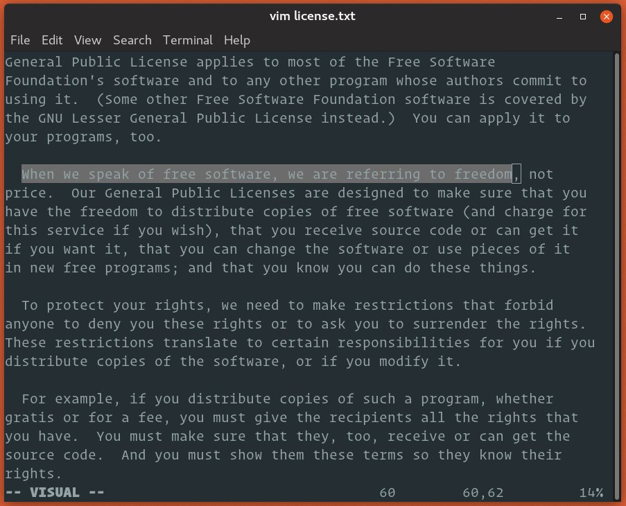

如何在 Vim/Vi 中复制，剪切和粘贴
使用文本文件时，复制，剪切和粘贴文本是最常执行的任务之一。Vim 或其早期版本 Vi 预装在 macOS 和几乎所有 Linux 发行版中。在您最喜欢的编辑器不可用的情况下，了解 Vim 的基础知识将很有帮助。
本文介绍了如何在 Vim/Vi 编辑器中复制，剪切和粘贴。
在普通模式下复制，剪切和粘贴
启动 Vim 编辑器时，您处于正常模式。在这种模式下，您可以运行 Vim 命令并浏览文件。
要从其他任何模式返回正常模式，只需按 Esc 按键。
Vim 具有自己的复制，剪切和粘贴术语。复制称为 yank(y) ，剪切称为 delete(d) ，粘贴称为 put(p) 。
复制(yark)
要复制文本，请将光标置于所需位置，然后 y 按键，然后按移动命令。以下是一些有用的 yanking 命令：
yy- 复制当前行，包括换行符。3yy- 从光标所处的行开始，复制三行。y$- 复制从光标到行尾的所有内容。y^- 复制从光标到行首的所有内容。yw- 复制到下一个单词的开头。yiw– 复制当前单词。y%- 复制到匹配的字符。默认情况下，支持对是()，{}和[]。在匹配的括号之间复制文本很有用。
剪切(delete)
在正常模式下， d 是删除按键，但是删除的同时会复制删除的内容，所以也是剪切文本的按键。将光标移动到所需位置，然后 d 按键，然后按移动命令。以下是一些有用的删除命令：
dd- 删除当前行，包括换行符。3dd- 从光标所在的行开始，删除三行，d$- 删除从光标到行尾的所有内容。
适用于拉动的运动命令也可用于删除。例如 dw ，删除到下一个单词的开头，并 d ^删除从光标到行首的所有内容。
粘贴
要放置被选中或删除的文本，请将光标移动到所需位置，然后按下小写的 p 将文本粘贴在光标之后或按下大写的 P 粘贴在光标之前。
在可视模式下复制，剪切和粘贴
Vim 的可视模式允许您选择和操作文本。
-
将光标置于您要开始作图或剪切的行上。
-
可视模式具有三个子类型。
- 按
v进入可视模式。 - 按
V进入可视行模式，其中按行选择文本。 - 按
Ctrl+v进入可视块模式。在此模式下，文本由矩形块选择。
进入可视模式还标记了一个开始选择点。
- 按
-
将光标移动到要复制或剪切的文本的末尾。您可以使用移动命令或上，下，右和左箭头键。

-
按
y复制或d剪切选择。 -
将光标移动到要粘贴内容的位置。
-
按下
P可将内容粘贴到光标之前，或p将其粘贴到光标之后。
结论
在本指南中，我们向您展示了如何在 Vim 中复制，剪切和粘贴。
如果您不熟悉 Vim ，请访问 Open Vim 站点，您可以在此通过交互式教程练习 Vim 。